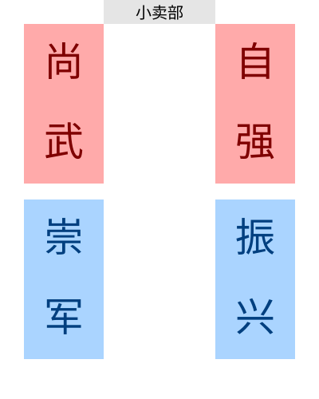

军训（初一）
在2024年11月19号，同学们到“福建龙翔国防教育基地”进行了为期5天的社会实践（以下称“军训”）。
龙翔位于福建省福清市镜洋镇，挺偏僻的。
在此之前，就有传闻说龙翔的环境很差，比如“床单上有尿渍”、“饭里有头发丝”等，那么，真实的龙翔是怎样的呢？
另外说明一下，四十中军训5天，收费515元，初一、高一参加本次军训。
环境
澡堂
龙翔只有公共浴室。每天晚上，要洗澡的人需带上工具（水桶、洗发水、沐浴露、浴巾、衣服等）并徒步挺长的一段距离。军训的前3天都在下雨，往往洗完澡后，穿着拖鞋走在泥泞、坑洼的路上，到宿舍时，脚已经白洗了。
男生澡堂入口有一个架子可供放衣服，且里面有几十个单间，但是只用了一条很薄的白色窗帘挡着，风一吹可能就飘起来了。而且白布下面有很大的空隙，隐私性超级低。单间和单间被铁板隔着，但铁板的一侧及下方均有空隙。
至于洗澡的体验感，那自然不必多说。里面可谓什么人都有，据说别班曾有四个人在同一间里洗澡。
宿舍
宿舍楼
四十中学生住在下图的四栋楼中，其中：初一男生住振兴楼、女生住尚武楼；高一男生住崇军楼、女生住自强楼。

左边的楼有6层、右边5层。
布局
每层楼有两个楼梯口、两侧有两个厕所及若干水池，走廊有防盗网、顶上还有晾衣杆。宿舍内部左右各3个上下铺，共计12张床。每间宿舍有两扇窗以及风扇、空调、铁架子。
卫生
三件套
话说学生的传言中“床单上有尿渍”这一事实也不知是否属实。但到龙翔的第一天，辅导员教学生叠“三折被”时，有人说看到床单发霉。
值得一提的是，枕头的魔术贴真的恶心。
最后一天，大家要把三件套拆掉放回。当同学们走进机房时，看到了这样一幕：几个比人高的洗衣机矗立其中，前面是圆形玻璃，里面有很多三件套正在被清洗。洗衣机运行的声音很大，走近时还能感觉到热气。旁边时三件套堆成的小山，同学们就把自己的三件套扔到这里——可见其卫生状况。
总之，三件套虽没有想象中的脏，但也绝非干净。
其他
床铺就几根铁架支撑，稍微动一动就吱吱作响。
至于“小动物”，目前是没有出现，但是辅导员曾经说：“不要再床上吃零食，不然会招惹小动物……”
门上还有学姐、学长留下的“提示”。同学们准备收拾行李离开时，振兴楼306突然有人发现门上有字：“快跑，这里闹过鬼”。
508事件
随着时间的推移，同学们发现了一个了不得的事件。据说，孔祥懿发现尚武楼的508寝室的门上写着这里死过3个人。于是，同学们大谈此时，男生306宿舍还一整个晚上讨论、推理此事，这件事也传得愈发离谱，看看同学们的话：
- 有人说，22年时这件事曾上过新闻。
- 有人说，以前门后有一张符咒，有人撕了之后，3个鬼就杀了她们。
- 有人说，一个晚上，508的两人移到其他宿舍，次日就有一个人死了。
- 有人说，逢3、6的年份，508就会死三个人。
- ……
以至于当快要到学校时，有人说：回家的第一件事就是百度搜索508宿舍。
后来，在周一早上，这件事就被班上的同学“辟谣”了，说根本就没有这事。
食堂
龙翔的食堂很大，且打饭窗口很多。另外，有两个打汤窗口。
吃饭的流程主要有下面几步：
- 齐步走
- 拿水果、洗手
- 打饭
- 吃饭
- 放盘子
- 集合
每次从训练的地方走向食堂，首先要站成四列并齐步走。但辅导员总会让大家走走停停，然后不断地对正、齐步走，令人心烦。
饭前需要洗手。食堂入口有一排水池，同学们往往只是淋一两秒就走。在中午，洗手前还会拿水果。饭后水果包括橙子、橘子、苹果，但许多人不大爱吃，于是他们的水果就会出现在其他学生或辅导员手上。
洗完手就可以进入食堂内部排队。地上有1米线，学生排队时需按照地上的线保持距离。
打完饭后，可以自愿打汤。第一天时，辅导员说一桌只能坐一个班的学生。这就导致前面的桌子往往被别班“霸占”，同学们只能到后面坐，而且找空桌也很不容易。
吃完饭后，便可以从出口离开。学生要将剩饭剩菜倒在外面摆着的蓝色大塑料缸内。然后，学生需到水池简单冲洗盘子，主要得把食物残渣冲走，油脂则无所谓。原因是：如果有饭粒粘在盘子上，到洗碗机里洗时就可能卡住（牛逼）。洗完后，需将餐具放在蓝色框里。
接下来，就要到各班约定的地点集合。在全班到齐之前，你需要上完厕所、装完水。等全班到齐后，就会开始接下来的活动。
但饭菜的味道总是一言难尽。第一天午饭时，同学们都说米饭很黏，不好吃；第三天早饭时，同学们推测豆浆是用粉跑的，因为从汤桶最底下打的豆浆没有豆渣。
每次午餐和晚餐，米饭的旁边总会有一块不知用什么食材做的饼，往往很难吃。另外，这里的一些菜表面都裹了一层看似挺粘稠的汤汁。
第一天，辅导员说可以加菜，但像鸡腿这样一人只能有一个的菜不能加。
再就是早餐了。一个鸡蛋是标配，另外还有两道小菜，主食则是馒头、包子之类的，至少不是单调的“馒头配萝卜干”。所以，一些人说早餐是三餐内最好吃的了。
但另外两餐就不一样了。每次你去外面，就会看到部分装剩饭剩菜的桶已经满出来了，还堆出了一座小山。这种现象最早体现在第二天的晚餐中，一些人表示那顿饭是最难吃的。还有一些人说，当时去到饭，看到这一幕时，差点没吐出来。
小卖部
和其他地方一样，这里有小卖部，就在四栋宿舍楼旁。里面还有卖汉堡、自制饮料之类的，开放时几乎爆满。但这儿的物价是真的高，一瓶纯悦矿泉水能卖3块。
当然，这里最受欢迎的东西是泡面，在第一天时，同学们得知可以吃泡面，结果当天晚上泡面就被抢光。第二天晚上，是吃泡面的高峰，第三天就禁止吃泡面了。原因是，当时厕所的垃圾桶里出现了泡面的桶，且开水房里、蹲坑里都是泡面汤汁，非常恶心。
操场
这里已知的操场有两个，一个就是普通操场，开营仪式、闭营仪式都在这举行。但这个操场有个令人无语的地方，就是会掉色。闭营仪式前，同学们坐在操场上，一会儿就有人发现自己的鞋底变绿了，然后就说这里会掉色。
第二个操场美其名曰“大操场”，结果同学们去到这里时发现就是一块大的水泥地，旁边虽有跑道，但上面有各种车辆，妥妥的一个停车场。
入口
入口处是一条大路（这条路跨过一条小溪），从国道转弯，开过这条路就能进入龙翔了。这里的大门的设计灵感据说是隐形战斗机，进入后，有着各种大炮、坦克等装备，而且都是真的，上面印有“中国人民解放军海军（空军、陆军）赠”。
这里还有一个公交站，名为“龙翔站”，广告牌上还写着“期待您下次光临”。
大厅
龙翔有两个大厅，分别为“①号多功能大厅”与“②号多功能大厅”。其中，“②号多功能大厅”里摆放着射击的相关道具，“①号多功能大厅”则是同学们常去的地方，那里有大屏幕以及一些座椅，用来进行文艺汇演、朗诵比赛等。
这里还有许多展馆，都是“60个项目”中的一员，但反正9班没有去过。
教官、活动
教官
话说在龙翔是没有教官的，只有“辅导员”，听上去好像亲切许多。但教官的本性是不会变的，还是该练练、该凶凶。这里的教官统一穿迷彩服，戴帽子。
同学们如果有什么事，也得叫“辅导员”，说“教官”大抵是没用的。但还是阻止不了同学们说辅导员为“教官”。
龙翔有专门为辅导员准备的喇叭，每天叫宿舍里的人起床、集合或者在大厅里“发号施令”都离不开它。其中有一个喇叭上面还贴了很多搞笑的贴纸。
有人发现，辅导员的手机壁纸是美女，于是就有人去作死问他，结果那人就被批评了，这时又有人发现当时辅导员在憋笑，而且据说有其他辅导员凑近去看他的手机。
至于上面的“他”，即9班的辅导员，因为嘴巴突出，又被叫做“鸭嘴兽”。他的名字也是争议不断。据说他叫做“王 wén hào”，具体是哪几个字也不知道。但也有人说是“王 hào wén”。一次，同学们在操场集合，其他辅导员还拿他的名字玩梗，说“wén hào hào wén”。同学们猜测，他的名应该是这么写的：“文”、“浩”。据说，“王文浩”曾在新疆当兵，后来退役来到龙翔。
辅导员的口音也很古怪。就说“一二一”，有一个辅导员是这么读的：“一儿一”。一次同学们齐步走，就听到别班方阵的学生故意将“一二一”喊成“一儿一”。另一个辅导员则读成这样：“亚二一”，而且这还影响到过“王文浩”辅导员。一次同学们走在吃饭的路上，听那个辅导员说“亚二一”，过一会儿“王文浩”也要喊“一二一”，却不小心喊成了“亚二一”。
还有一种口音几乎通用于龙翔的所有辅导员，那就是喊“立定”时，辅导员会刻意加重其语气，喊成“列——丁！”。
这里的辅导员还非常喜欢喊“四十中”、“初中部”、“高中部”、“×班”等，反正对应的学生得答“到！”，例如以下情景：
辅导员：“四十中？”
学生：“到！”
辅导员：“四十中？”
学生：“到！”
辅导员：“高中部？”
学生：“到！”
辅导员：“高中部？”
学生：“到！”
辅导员：“高中部一、二、三楼，下楼集合！”
（一段时间后）
……
辅导员：“初中部？”
学生：“到！”
辅导员：“初中部？”
学生：“到！”
（一段时间后）
辅导员：“一、二、三楼，下楼集合！”
……
辅导员：“一班？”
学生：“到！”
辅导员：“二班？”
学生：“到！”
辅导员：“三班？”
学生：“到！”
……
辅导员：“九班？”
学生：“到！/操！”
……
辅导员：“感恩的心？”
学生：“到！”
辅导员：“队列方阵？”
学生：“到！/操！”
像这样的情景，每天要重复n遍，而在那三个人（陈睿卓、唐家祺、郑锦熠）的带领下，越来越多人开始喊“操！”，甚至推广到了别班。以至于到闭营仪式之前，同学们的应答听着就很像“操！”，但辅导员却以为就是“到！”。
至于辅导员的语录，也是数不胜数，如：
在众多辅导员中，有几个“长（zhǎng）”的角色，掌管其他辅导员。所以龙翔会出现“辅导员大骂辅导员”的“奇观”。
辅导员还喜欢用“钓鱼”战术控制学生。例如，辅导员多次说过：“如果今天练得好，明天就全都是玩；如果练得不好，就全都是训练。”“明天（下午）训练的时间取决于你们现在的态度。”之类的话。当然哪怕同学们练得再好，也鲜有玩的时间。另一种情况则是辅导员会“挑刺”，指出方阵中的部分学生那里不好，并让玩的时间泡汤。
另一种渠道就是压榨休息时间，看这样几句话：“这一遍练得好就休息，练不好就一直练。”“最后一遍练完就休息。”而当所谓的“这一遍”练完后，往往没有想象中的休息。要么就是再去练其他的项目，要么练第二遍、第三遍。举个例子，第四晚出来集合，本来说好宣誓完就回宿舍，结果宣誓了两遍后又冒出个唱国歌环节，本来说“唱得好就提前解散”，等到唱得好了，又开始练队列/感恩的心，回宿舍的最早时间也自然被推到九点半。
这里就不得不牵扯到两个基本事实。第一个：在到达龙翔的第一天，辅导员说这里有60个玩的项目，且需要门票才能玩。这里分为两个主要项目，一是训练、二是玩，两者互相穿插。如果练得好，玩的时间就多，练不好，就别提玩的事情。这样也间接加强了辅导员对学生的控制，加强了训练效果；同时也导致从学生的角度来看，五天基本全是训练。
第二个：辅导员说，只有在晚上8:00-9:00才能去小卖部，其余时间段去的话就会被驻守在那的辅导员抓住。然后看看龙翔4个晚上的安排：第一晚看电影，第二晚在大厅玩游戏/体验VR，第三晚训练，第四晚文艺晚会。没有一晚能在8点之前回到宿舍的。
训练
这次军训，以班为单位展开训练，所有行动必须和本班一起。
辅导员口口声声的“训练”当然是很无聊的。辅导员声称的训练项目包括：
- 稍息立正
- 跨列立正
- 停止间转法
- 敬礼与礼毕（包括半边向左/右转）
- 齐步走的行进与立定
成果展示时，稍息立正和跨列立正合并为一项。
当然，还有站军姿、向前对正和原地踏步走。站军姿实际上是最频繁的项目，当以班为单位训练时，“王文浩”就会动不动让大家“军姿十分钟”，起初有一个人动就多站一分钟，后来一个人动就得加5或10分钟。不过，往往站的时间只有一下子，“十分钟”只是噱头。
其实，这些项目与平时最大的不同就是声音。凡遇到要跺脚的时候都得跺响（齐步走除外），最好把地板给跺塌。辅导员曾让大家使劲跺，地板坏了他会赔。
还有需要声音的就是礼毕与齐步走。礼毕时，手要拍响；齐步走时，要有划过衣服的声音。
第三天，训练的项目出现了“分化”。为了圆满地举行闭营仪式，大家分成了四个方阵进行训练：
- 队列
- 感恩的心
- 国家
- 炮排
这是初中的两大方阵之一，也是9班所在的方阵。说白了，这个方阵的展示内容就是训练的内容，包括四个科目：稍息立正与跨列立正、停止间转法、敬礼与礼毕、齐步走的行进与立定。
这是初中部的另一方阵，表演内容为《感恩的心》手语操（手势舞）。
这是高中部的方阵之一，和“感恩的心”一样，是展示手语操的。
这个方阵主要是在闭营仪式时放炮，增加氛围感，同时也是唯一一个有配备道具的方阵。
内务
龙翔对内务要求严格。首先是床上：床单不能有褶皱、被子要叠成三折被；床铺朝门的方向为床尾，书包就放在床尾的地方（对此辅导员之间还有不同的要求，如“王文浩”要求书包放中间，另一个辅导员却让大家放靠墙的一侧），床头中间放被子、上面是枕头。
左侧的床底用来摆放水桶，右边的床底放行李，要求摆成一条线。门口摆放拖鞋或运动鞋，也是要一条线摆下去。
每次集合，内务得达到以上的标准，而且垃圾要倒掉，灯要关掉。
这里的辅导员会不定时去检查内务。一次同学们在大厅训练，一会儿辅导员让大家坐下休息，并说要给大家“惊喜”。接下来就是史诗级的一幕——只见宿舍的照片被投放到大屏幕上，引起一片惊呼，不少人说自己的宿舍肯定不合格。辅导员就询问宿舍长是谁，这个×××是谁的，并让相关人员站在台上，后来被罚的人就干脆直接站在方阵里。
游戏及项目
龙翔的60个项目，9班只体验了三个——这三个项目都在“一号食堂”的楼上（同学们平常吃饭的地方是“二号食堂”）。它们是：
- 射击
- VR
- 穿越火线
龙翔虽然有真实的射击项目，但9班玩的只是电脑模拟的（虽然有枪），游戏界面有10个瓶子和1个不断移动的屏风，给你十发子弹，目标是击碎所有瓶子。但很多人实践是发现弹道偏左，甚至还有连发的现象。
第二天晚上，辅导员让没体验的班级去体验。每次体验只能做4人，体验时，辅导员让同学们不要看，防止大家看到画面失去新鲜感，但还是阻止不了同学们偷看。VR的场景是坐过山车，共有3种场景。
这个项目对于同学们早已不陌生，只是名字高大上一点，所以没什么体验感（如图）。

然后就是“廉价”游戏了。

再来看看四十中官网的文段——我们似乎少玩了哪个项目啊……
研学期间，基地组织的消防演练、徒步拉练、真人CS活动、军事射击、观影等联欢活动丰富了学生的体验，给学生们留下了美好的回忆。
拉练
拉练其实就是走路、爬山，同学们也把它叫做“长征”。这次拉练，据辅导员说有4公里左右（来回8公里），而且同学们是出基地的。现在，就看看拉练途中的新鲜事吧。
同学们陆续到操场集中。辅导员对大家说了一些注意事项，如：不要单独行动、班级之间不要有间距等。然后，同学们陆续离开了这里，充满未知的“拉练”开始了。
和想象中的不同，同学们并没有在“很大”的基地中行走。很快，大家就来到了出口。
已经能看到那架战斗机了，旁边的大炮也格外引人注目，不少人调侃“这个炮前面怎么还被套住了”。
再走下去，就该从那个出口走出去了，前面的8个班走在前面，远远望去就像一根黑线。这儿显得格外开阔，给人一种壮观的感觉。
“哇！要回家了……”
“再见了！龙翔……”
“回四十中了……”
辅导员和“Miss.Liu”都走在9班的旁边。大家终于走出了龙翔的大门，外面的一切都是未知的。
大家边走边看——毕竟来时没时间细细端详这条路的景物。白色的护栏底下有一条小溪，水不多，河床的相当一部分斗露了出来。在前面就是树丛了，其间有一处没种树的地方，可以从这里走到那条溪水旁。
走过这段短短的路后，军训大军就开始右转，走上了国道。路上树叶很少，比较平坦。这里一面是山，一面是田。偶尔有几辆车飞驰而过，同学们就开始喊：
“不要走，送我回家——”
当然没有反应了。
哪怕辅导员用“军姿十分钟”“加练”来威胁，仍改不掉同学们讲话的毛病，一路上，总能听到熙熙攘攘的聊天声。有时走太慢了，同学们就得小跑一阵。
或许Miss.Liu也嫌无聊，还让大家唱起歌来：
“五星红旗迎风飘扬，胜利歌声多么响亮~
“歌唱我们亲爱的祖国，从今走向繁荣富强……”
然后就触发了连招：
“为实现中华民族的伟大复兴，我们——
“准备着，时刻——准备着！”
然后就只剩下几个人在说：
“您看，清澈的爱只为中国的民族精神，
“您看，犯我中华者虽远必诛的民族气节，
“您看，脱贫攻坚，全面小康，千年梦想，今朝实现，
“您看，嫦娥探月，蛟龙深潜，大国正气，世人惊艳，
“您看，生态文明，绿色低碳，美丽中国，展开画卷，
“您看，一带一路，互通互联，和平发展，合作共赢……”
然后就没人念了。于是Miss.Liu又带起来：
“五星红旗迎风飘扬，胜利歌声多么响亮……”
许多人就跟唱：
“歌唱我们亲爱的祖国，从今走向繁荣富强……然后呢？”
然后，就鲜有人会唱了。Miss.Liu想了一会儿道：“还有什么歌？”
“国歌！”
“起来，不愿做奴隶的人们，
“把我们的血肉，筑成我们新的长城……”
大家一边唱歌，一边行进，经过了一条岔路，从那看去，颜色各异的田地尽收眼底。只见右边是一道门，上书：“玉埔村”，路的左边有一石碑，也刻着“玉埔村”三字。
同学们首先想到“蒲林豪”的“蒲”，然后一个个喊起来：
“到蒲林豪家了！”
“蒲林豪，还不回家？”
队伍里便钻出一个人——蒲林豪还真个往那门里走。队伍里出现了笑声。
“那《强军战歌》会唱吗？”
其他学校
一天的主要安排
起床
龙翔一般6点起床。当你听到“四十中，起床~”这句洗脑的名言时，那么不久后本栋楼的辅导员就会挨个去叫宿舍里的人起床。然后就是洗漱、整理内务。
吃饭
训练
洗澡
晚上集合
睡觉
学生
在军训的过程中，郑欣甜等人编了一首《恩亚歌》：
恩亚很帅~
恩亚很酷~
恩亚很白~
恩亚很奶~
回头看！
恩亚怪可爱，
他人也不坏~
一些女生（如李梦妍、林芷琪、方欣妍）有时还会说：
有一对三姐妹在活动中常被提起，分别是：方欣妍、杨依诺、俞昕辰。